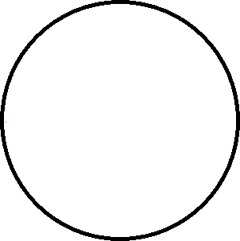
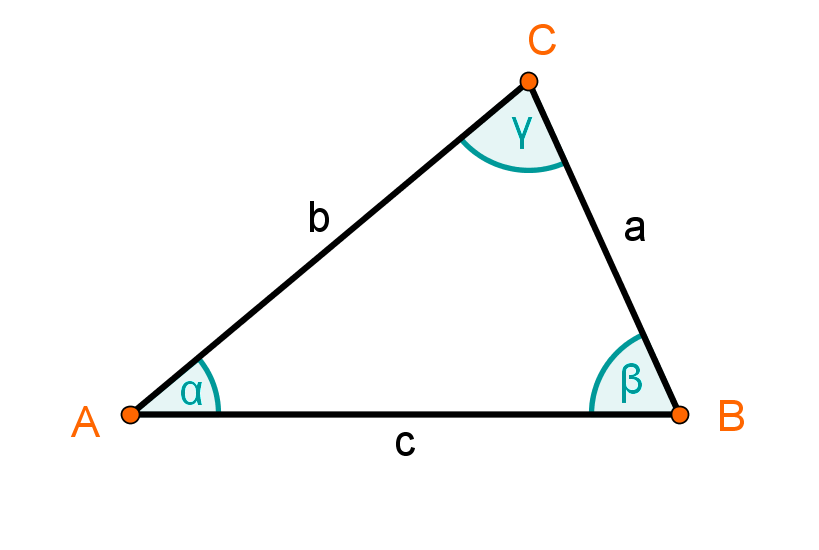
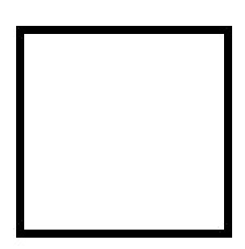
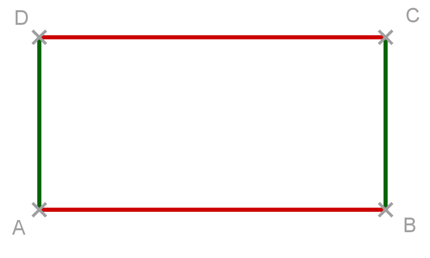

Was sind geometrische Formen?
Geometrische Formen sind Figuren oder Flächen, die in der Mathematik eine wichtige Rolle spielen. Beispiele sind Kreise, Dreiecke, Quadrate und Rechtecke.
Welche Formen gibt es?
- Kreis: Eine runde Form, bei der alle Punkte gleich weit vom Mittelpunkt entfernt sind. 
- Dreieck: Eine Form mit drei Seiten und drei Ecken. Es gibt verschiedene Arten wie gleichseitige, rechtwinklige und ungleichseitige Dreiecke. 
- Quadrat: Eine Form mit vier gleich langen Seiten und vier rechten Winkeln. 
- Rechteck: Ähnlich wie ein Quadrat, aber zwei gegenüberliegende Seiten sind gleich lang. 
Warum sind sie wichtig?
Geometrische Formen helfen uns, die Welt um uns herum zu verstehen. Sie sind wichtig in der Architektur, Kunst und sogar in der Naturwissenschaft.
Übung: Erkenne die Formen!
Kannst du die Form eines Fußballfelds, eines Pizzastücks oder eines Fensters beschreiben? Welche geometrischen Formen erkennst du?